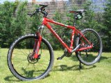
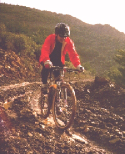
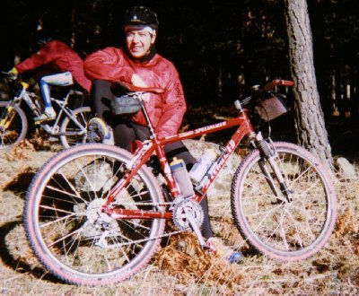
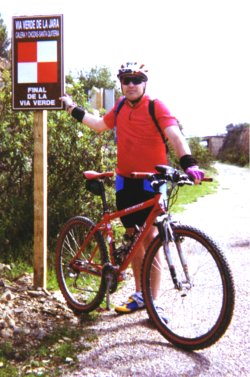
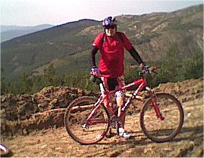
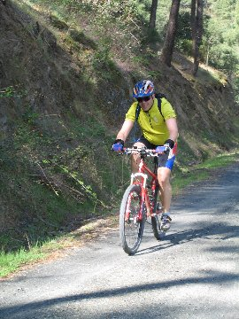

La niña ... |
Cuadro: Specialized S Works M2 XX (Metal Matrix)
Horquilla: Marzocchi Z4 Flyligh Air Potencia: Profile Stiffy ahead Manillar: Bontrager Titec titanio Acoples: R2 ONOFF Aluminio Frenos: Shimano Deore 525 Hidráulico / Shimano V-Brake XT Manetas: Avid 2.0 L Pulsadores de cambio: Shimano XT Dirección: FSA Orbit 3D ahead Bujes: Shimano XT Pedalier: Shimano ES-70 BSA |
Cambio: Shimano XT
Desviador: Shimano XT Tija: Syncros aluminio Sillín: Specialized Body Geometry MTB Pro Ti Bielas, platos: Shimano LX M571-HOLLOW 175 (44-32-22) Casete: Shimano XT (11-32) 9V Cadena: Shimano HG-93 Pedales: Tioga Clingon Llantas: Mavic 317 Disco / Mavic 517 Cubiertas: Invierno: Michelín WildGripper / Verano: IRC Mythos XC K |
||
Arroyo ConchaFeb 1997 |
 |
Hueco de San BlasNov 1998 |
 | |
Ferrocarril de La JaraAbr 2000
|
 |
Collado del MosquitoOct 2001 |
 | |
Pontón de la OlivaAbr 2005
|
 | |||
|
Mis rutas preferidas: |
Canto Cochino [470 KB]
Una de clásicas.
Circuito de la Puebla de la Sierra [460 KB] ¡52Km realmente duros! Collado El Mosquito [630 KB] ¡Inédita! En otoño es obligado hacerla. Cruz de Juan Ruiz [952 KB] ¡Inédita! ¡Con 20Km de duro ascenso! |
Hueco de San Blas [296 KB]
Para reflexionar mientras ...
Puerto de Fuenfría [672 KB] Más allá de Fuenfría. Doble Morcuera [620 KB] ¡Sólo si estas en forma! 48Km. Estación de La Pinilla [240 KB] ¡Inédita! ¡Cuidado que angaña! 40Km. |
||
{kind=link}
{kind=link}
{kind=link}
{kind=link}
{kind=link}
{kind=link}
{kind=link}
{kind=link}